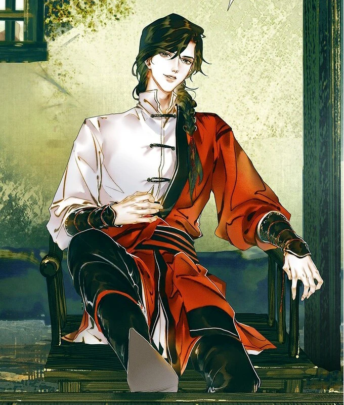
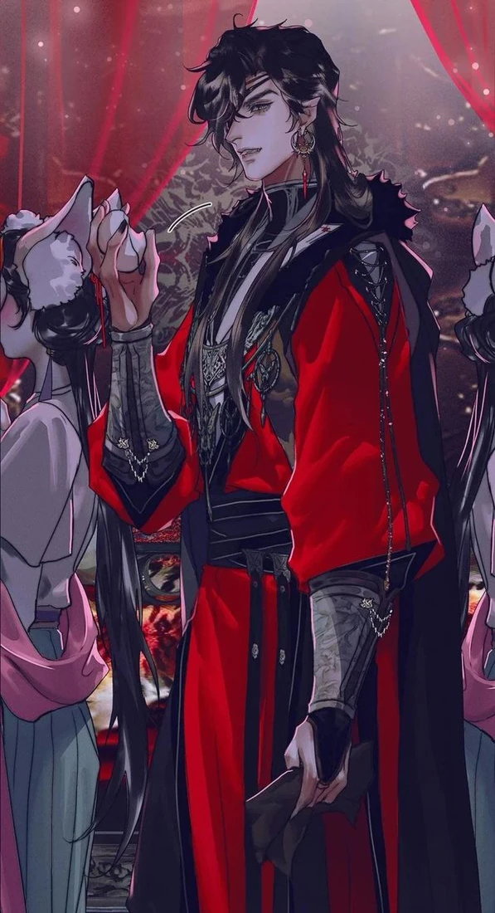

Ваше Высочество, я навсегда останусь вашим самым преданным последователем.
Хуа Чэн (花城 Huā Chéng), также известен как Саньлан (三郎, Sān Láng) — непревзойдённый князь демонов и антигерой новеллы «Благословение небожителей» и связанных произведений. Второй главный герой новеллы, один из сильнейших демонов — великое бедствие «Искатель Цветов под Кровавым Дождём»
Имя Хуа Чэн, скорее всего, было вымышленным, а его внешность — иллюзией. Он являлся в образе взбалмошного, капризного юнца, другим — галантного красавца-мужчины, а третьи утверждали, что повстречались с обольстительной девушкой. Одним словом, выглядеть он мог как угодно. Всё, что о нём было известно наверняка: что он носит красную одежду, вокруг него кружат серебристые бабочки, а появляется он чаще всего там, где запахло кровью.
 Впервые лицом к лицу Хуа Чэн предстал перед Се Лянем в образе юноши, представившись Сньланом. Он выглядел не старше шестнадцати-семнадцати лет, был необычайно красив, с кожей белее снега и глазами ярче звёзд, но в лице читалась некая неуловимая дикость. В одежде краснее кленовых листьев и паре дорогих сапог, обтягивающих стройные голени. Тёмные волосы были небрежно собраны на затылке. Руки у него были изящные, худощавые, с длинными пальцами. Но это была не изнеженная красота, а та, что таит в себе силу.
Носил платье фасона цзяньсю — костюм с узкими рукавами. Одет был довольно небрежно, но при этом одеяния его явно были сделаны из материала высшего качества. Несмотря на шутливый тон, у него был вид человека, который полностью контролирует ситуацию. Голос его звучал немного ниже, чем у мальчиков схожего возраста, и куда приятнее. С лица его не сходила улыбка, но по тону голоса было непонятно, говорит он всерьёз или подтрунивает над собеседником
Даже в образе Саньлана он выше ростом, чем Се Лянь, хотя и немного ниже, чем в истинном облике. Тем не менее образ Саньлана — это личина на истинном воплощении, а не двойник, поэтому он не имеет «ошибок» в исполнении — линии на его ладонях предельно отчётливые и волосы натуральные, без каких-либо странностей
Хуа Чэн никогда не показывался на публике в истинном обличии, он так часто менял внешность, что даже жители Призрачного города не знали, как он выглядит на самом деле. Только Се Лянь мог знать наверняка, что когда они встретились в Призрачном городе его облик был настоящим, поскольку он перед этим пообещал, что при следующей встрече принц увидит его в истинном обличии
Его истинное обличие — юноша восемнадцати-девятнадцати лет, он выглядел не просто на несколько лет старше, но и стал выше. Глядя на Саньлана Се Лянь с трудом, но мог заглянуть ему в глаза, при взгляде же на демона принцу приходилось задирать голову
Его одежда также была краснее кленовых листьев, а кожа белее снега. Всё то же удивительно красивое молодое лицо — лишь черты стали более резкими, а подростковая застенчивость сменилась спокойной уверенностью. Это был ещё юноша, но в то же время уже мужчина. В облике чувствовалась неукротимая дикость. Единственный глаз — левый — блестел, как звезда, а правый — закрывала чёрная повязка. Голос звучал ниже, чем в образе Саньлана, но ещё приятнее для слуха. Распущенные чёрные волосы струились по спине. В его красоте появилось что-то зловещее, и только тоненькая косичка справа с вплетённой в неё красной коралловой бусиной придавала демону несколько озорной вид. В косицу вплетена красная нить. На линии роста волос у Хуа Чэна едва заметно выделялся «мыс красавицы» (линия роста волос на лбу в форме треугольника вершиной вниз), из-за которого черты лица визуально приобретали изящество".
На запястья надеты серебряные наручи искусной работы: металл был покрыт узорами, на его поверхности кленовые листья и бабочки сплетались с оскаленными пастями животных. В целом украшение не походило на работу местных мастеров, вещь была явно старинная — возможно, привезённая издалека. Сапоги из чёрной кожи плотно обтягивали стройные ноги, а по бокам голенища были украшены двумя серебряными цепочками, издававшими мелодичный звон при каждом шаге. С серебряного пояса свисал длинный изогнутый ятаган — тоже серебряный.
Лёгкая походка как у молодого юноши, но в то же время решительная, словно он готов был растереть в порошок любого, кто встанет у него на пути. Руки изящные и бледные, с отчётливыми суставами. На правой руке на среднем пальце повязана яркая красная нить.